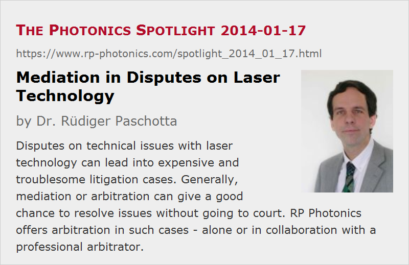

Mediation in Disputes on Laser Technology
Posted on 2014-01-17 as a part of the Photonics Spotlight (available as e-mail newsletter!)
Permanent link: https://www.rp-photonics.com/spotlight_2014_01_17.html
Author: Dr. Rüdiger Paschotta, RP Photonics Consulting GmbH
Abstract: Disputes on technical issues with laser technology can lead into expensive and troublesome litigation cases. Generally, mediation or arbitration can give a good chance to resolve issues without going to court. RP Photonics offers arbitration in such cases - alone or in collaboration with a professional arbitrator.

As in other areas of business, disputes can arise e.g. when some company purchases a laser from some supplier. Frequently, some technical issues are at the core of the dispute. For example, the following types of questions may occur, where the two parties develop conflicting views:
- Is the beam quality consistent with the specifications, which may be somewhat vague in that point?
- Does it have to be considered as acceptable that the laser stays within specifications only if its alignment is optimized quite often by the user?
- Is it unusual that certain parts needs to be replaced quite often? Is it a sign of poor workmanship?
As lasers cost a lot of money, the involved parties may not be perfectly relaxed when discussing such things. In some cases, they end up going to court. However, the resulting litigation is usually not at all satisfying for any party; it costs enormous money and time, does not at all reliably bring the expected results, distracts from the actual focus of the company, and destroys business relations.
It is a good idea in such a situation to seriously try mediation in order to greatly reduce the cost, risk and distraction. A caveat is only: how to find an expert who could act as an mediator? While it is normally quite easy to find out which law court has to be chosen, finding a suitable expert can be difficult. You would like that person to have an indisputable technical competence, and also a reputation and standing such that both parties can trust in his or her honest attempt to be impartial and just.
Mediation belongs to the services I offer. It is not that I am often asked about such things, but it is an area where I can be quite useful (provided, of course, that I don't have too close relations to one of the parties). Although I do not have a formal training in mediation or arbitration, I am familiar with the underlying principles and confident that I can properly handle such cases to the benefit of both parties. If you want a fully professional mediator, I am also happy to work together with that person, complementing the expertise in the technical area.
You may prefer in such a case to first ask an legal adviser. It cannot hurt to know more precisely what your legal position would be. However, note that lawyers earn substantially more money when going through a court case with you. So they may be tempted to make you more optimistic than you should actually be concerning the chances at court. That's different with a mediator, who's explicit task is to find a settlement in a cheaper way. Anyway, your lawyer will also hardly understand the technical issues, so you need a technical expert in any case.
A company's boss may actually believe that the internal technical know-how of the company is sufficient for such purposes. However, an internal expert can obviously not be impartial and thus not convincing for the other party. Even for internal advice, internal experts may get into difficult situations. For example, they may feel uneasy about certain mistakes they did themselves, and thus be somewhat biased witnesses. That may exactly lead to overoptimistic assessments of chances, which can lead into financial disasters. So I would warmly recommend to be careful with that.
This article is a posting of the Photonics Spotlight, authored by Dr. Rüdiger Paschotta. You may link to this page and cite it, because its location is permanent. See also the RP Photonics Encyclopedia.
Note that you can also receive the articles in the form of a newsletter or with an RSS feed.
Questions and Comments from Users
Here you can submit questions and comments. As far as they get accepted by the author, they will appear above this paragraph together with the author’s answer. The author will decide on acceptance based on certain criteria. Essentially, the issue must be of sufficiently broad interest.
Please do not enter personal data here; we would otherwise delete it soon. (See also our privacy declaration.) If you wish to receive personal feedback or consultancy from the author, please contact him e.g. via e-mail.
By submitting the information, you give your consent to the potential publication of your inputs on our website according to our rules. (If you later retract your consent, we will delete those inputs.) As your inputs are first reviewed by the author, they may be published with some delay.
|  |
If you like this page, please share the link with your friends and colleagues, e.g. via social media:
These sharing buttons are implemented in a privacy-friendly way!